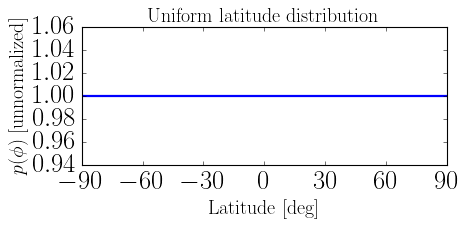
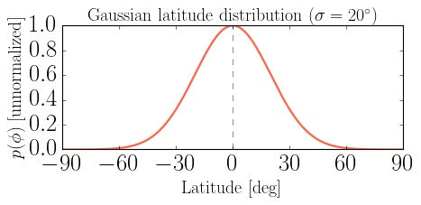
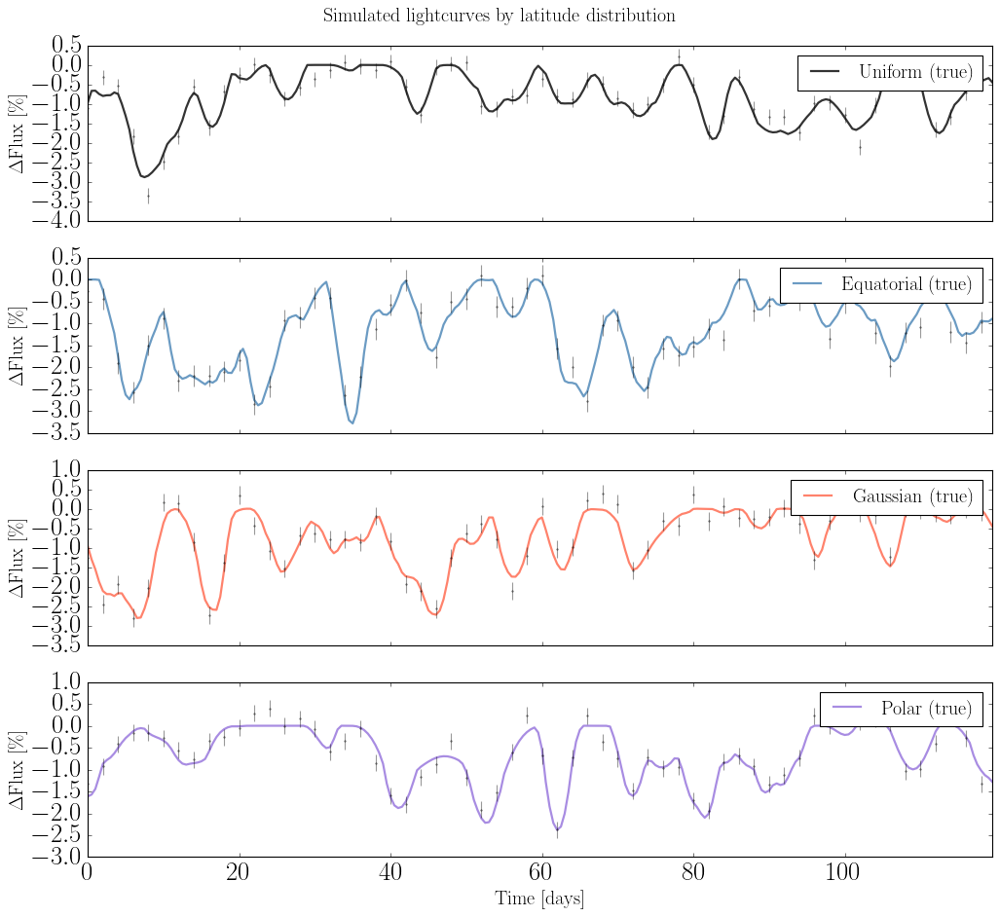
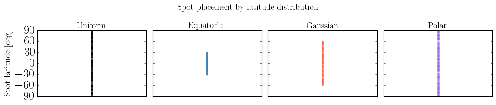

Custom Latitude Distributions#
This notebook shows how to define a custom starspot latitude distribution by subclassing LatitudeDistributionFunction and how it propagates through the spotgp pipeline.
Two roles of the latitude distribution:
Component |
Role |
|---|---|
|
PDF weights the latitude integral \(\int p(\phi)\,K(\phi,\tau)\,d\phi\) |
|
|
Sections
Default uniform distribution
Equatorial band — narrow
lat_rangeGaussian-weighted distribution — custom PDF over latitude
Polar band — spots at high latitudes
Kernel and lightcurve comparison across all distributions
[4]:
import sys
sys.path.append("../..")
import numpy as np
import matplotlib.pyplot as plt
import jax.numpy as jnp
from src_jax import (
LatitudeDistributionFunction,
TrapezoidSymmetricEnvelope,
VisibilityFunction,
SpotEvolutionModel,
LightcurveModel,
AnalyticKernel,
)
label_fs = 18
np.random.seed(42)
# Shared model components reused throughout
_envelope = TrapezoidSymmetricEnvelope(lspot=15.0, tau_spot=5.0)
_visibility = VisibilityFunction(peq=10.0, kappa=0.3, inc=np.pi / 3)
1. Default uniform distribution#
When no latitude_distribution is supplied to SpotEvolutionModel, a LatitudeDistributionFunction() is used — uniform over \([-\pi/2,\, \pi/2]\) (all latitudes with equal weight).
[2]:
lat_uniform = LatitudeDistributionFunction()
print(lat_uniform)
print("lat_range :", lat_uniform.lat_range)
print("p(0) :", lat_uniform(0.0))
print("p(pi/4) :", lat_uniform(np.pi / 4))
model_uniform = SpotEvolutionModel(
envelope=_envelope,
visibility=_visibility,
sigma_k=0.01,
# latitude_distribution defaults to LatitudeDistributionFunction()
)
LatitudeDistributionFunction(lat_range=[-1.571, 1.571])
lat_range : (-1.5707963267948966, 1.5707963267948966)
p(0) : 1.0
p(pi/4) : 1.0
[5]:
phi = np.linspace(-np.pi / 2, np.pi / 2, 300)
pdf_vals = np.array([lat_uniform(p) for p in phi])
fig, ax = plt.subplots(figsize=(6, 3))
ax.plot(np.rad2deg(phi), pdf_vals, lw=2)
ax.set_xlabel("Latitude [deg]", fontsize=label_fs)
ax.set_ylabel(r"$p(\phi)$ [unnormalized]", fontsize=label_fs)
ax.set_title("Uniform latitude distribution", fontsize=label_fs)
ax.set_xlim(-90, 90)
ax.set_xticks(np.arange(-90, 91, 30))
fig.tight_layout()
plt.show()

2. Equatorial band#
Restrict spots to low latitudes by overriding lat_range. The PDF itself remains uniform within the narrower range.
[6]:
class EquatorialBand(LatitudeDistributionFunction):
"""Uniform distribution confined to |phi| < max_lat."""
def __init__(self, max_lat_deg: float = 30.0):
self._max_lat = float(np.deg2rad(max_lat_deg))
@property
def lat_range(self) -> tuple:
return (-self._max_lat, self._max_lat)
def __call__(self, phi: float) -> float:
return 1.0
lat_equatorial = EquatorialBand(max_lat_deg=30.0)
print(lat_equatorial)
print("lat_range :", tuple(np.rad2deg(lat_equatorial.lat_range).round(1)), "deg")
model_equatorial = SpotEvolutionModel(
envelope=_envelope,
visibility=_visibility,
sigma_k=0.01,
latitude_distribution=lat_equatorial,
)
EquatorialBand(lat_range=[-0.524, 0.524])
lat_range : (np.float64(-30.0), np.float64(30.0)) deg
[9]:
phi_eq = np.linspace(*lat_equatorial.lat_range, 300)
pdf_eq = np.array([lat_equatorial(p) for p in phi_eq])
fig, ax = plt.subplots(figsize=(6, 3))
ax.plot(np.rad2deg(phi_eq), pdf_eq, lw=2, color="steelblue")
ax.set_xlabel("Latitude [deg]", fontsize=label_fs)
ax.set_ylabel(r"$p(\phi)$ [unnormalized]", fontsize=label_fs)
ax.set_title(r"Equatorial band ($|\phi| < 30^\circ$)", fontsize=label_fs)
ax.set_xlim(-90, 90)
ax.set_xticks(np.arange(-90, 91, 30))
fig.tight_layout()
plt.show()

3. Gaussian-weighted distribution#
A Gaussian PDF smoothly down-weights high latitudes rather than cutting them off sharply. Both lat_range and __call__ are overridden.
[10]:
class GaussianLatitude(LatitudeDistributionFunction):
"""
Gaussian PDF centred at `center` with standard deviation `sigma`.
Spots can emerge anywhere within ±3σ of the center, but are weighted
toward the center of the distribution.
"""
def __init__(self, sigma_deg: float = 20.0, center_deg: float = 0.0):
self._sigma = float(np.deg2rad(sigma_deg))
self._center = float(np.deg2rad(center_deg))
@property
def lat_range(self) -> tuple:
return (self._center - 3 * self._sigma,
self._center + 3 * self._sigma)
def __call__(self, phi: float) -> float:
return float(np.exp(-0.5 * ((phi - self._center) / self._sigma) ** 2))
lat_gauss = GaussianLatitude(sigma_deg=20.0)
print(lat_gauss)
print("lat_range :", tuple(np.rad2deg(lat_gauss.lat_range).round(1)), "deg")
print("p(0) :", lat_gauss(0.0))
print("p(30 deg) :", lat_gauss(np.deg2rad(30.0)))
model_gauss = SpotEvolutionModel(
envelope=_envelope,
visibility=_visibility,
sigma_k=0.01,
latitude_distribution=lat_gauss,
)
GaussianLatitude(lat_range=[-1.047, 1.047])
lat_range : (np.float64(-60.0), np.float64(60.0)) deg
p(0) : 1.0
p(30 deg) : 0.32465246735834974
[11]:
phi_g = np.linspace(-np.pi / 2, np.pi / 2, 300)
pdf_g = np.array([lat_gauss(p) for p in phi_g])
fig, ax = plt.subplots(figsize=(6, 3))
ax.plot(np.rad2deg(phi_g), pdf_g, lw=2, color="tomato")
ax.axvline(0, color="k", lw=0.8, ls="--", alpha=0.5)
ax.set_xlabel("Latitude [deg]", fontsize=label_fs)
ax.set_ylabel(r"$p(\phi)$ [unnormalized]", fontsize=label_fs)
ax.set_title(r"Gaussian latitude distribution ($\sigma = 20^\circ$)", fontsize=label_fs)
ax.set_xlim(-90, 90)
ax.set_xticks(np.arange(-90, 91, 30))
fig.tight_layout()
plt.show()

4. Polar band#
Spots confined to high latitudes (like solar polar faculae). Implemented as two symmetric bands, one at each pole.
[12]:
class PolarBand(LatitudeDistributionFunction):
"""
Two symmetric bands near the poles: |phi| in [min_lat, pi/2].
"""
def __init__(self, min_lat_deg: float = 60.0):
self._min_lat = float(np.deg2rad(min_lat_deg))
@property
def lat_range(self) -> tuple:
# Full range so spots can land at either pole
return (-np.pi / 2, np.pi / 2)
def __call__(self, phi: float) -> float:
# Non-zero weight only at high latitudes
return 1.0 if abs(phi) >= self._min_lat else 0.0
lat_polar = PolarBand(min_lat_deg=60.0)
print(lat_polar)
print("p(0) :", lat_polar(0.0))
print("p(70 deg) :", lat_polar(np.deg2rad(70.0)))
model_polar = SpotEvolutionModel(
envelope=_envelope,
visibility=_visibility,
sigma_k=0.01,
latitude_distribution=lat_polar,
)
PolarBand(lat_range=[-1.571, 1.571])
p(0) : 0.0
p(70 deg) : 1.0
[13]:
phi_p = np.linspace(-np.pi / 2, np.pi / 2, 300)
pdf_p = np.array([lat_polar(p) for p in phi_p])
fig, ax = plt.subplots(figsize=(6, 3))
ax.fill_between(np.rad2deg(phi_p), pdf_p, alpha=0.4, color="mediumpurple")
ax.plot(np.rad2deg(phi_p), pdf_p, lw=2, color="mediumpurple")
ax.set_xlabel("Latitude [deg]", fontsize=label_fs)
ax.set_ylabel(r"$p(\phi)$ [unnormalized]", fontsize=label_fs)
ax.set_title(r"Polar band ($|\phi| > 60^\circ$)", fontsize=label_fs)
ax.set_xlim(-90, 90)
ax.set_xticks(np.arange(-90, 91, 30))
fig.tight_layout()
plt.show()

5. Kernel and lightcurve comparison#
5a. GP kernel shapes#
The latitude distribution modifies which latitudes contribute to the kernel integral. Spots at different latitudes rotate at different speeds (differential rotation), so the kernel shape — and in particular how quickly the periodic signal dephases — depends on the latitude distribution.
[14]:
models = {
"Uniform": model_uniform,
"Equatorial": model_equatorial,
"Gaussian": model_gauss,
"Polar": model_polar,
}
colors = {
"Uniform": "k",
"Equatorial": "steelblue",
"Gaussian": "tomato",
"Polar": "mediumpurple",
}
lag = np.linspace(0, 3 * _visibility.peq, 400)
kernels = {}
for name, mdl in models.items():
ak = AnalyticKernel(mdl)
K = ak.kernel(lag)
kernels[name] = K
fig, ax = plt.subplots(figsize=(12, 5))
for name, K in kernels.items():
ax.plot(lag, K / K[0], label=name, color=colors[name], lw=2)
for n in range(1, int(lag[-1] / _visibility.peq) + 1):
ax.axvline(n * _visibility.peq, color="k", alpha=0.1, lw=1)
ax.set_xlabel("Lag [days]", fontsize=label_fs)
ax.set_ylabel(r"$K(\tau) / K(0)$", fontsize=label_fs)
ax.set_title("GP kernel for different latitude distributions", fontsize=label_fs)
ax.legend(fontsize=14)
ax.set_xlim(lag[0], lag[-1])
fig.tight_layout()
plt.show()

5b. Lightcurve comparison#
LightcurveModel.from_spot_model uses lat_range from the latitude distribution to set the bounds for uniform spot placement. The PDF shape (if non-uniform) affects only the kernel integration in AnalyticKernel; the forward simulation always samples uniformly within lat_range. For a non-uniform forward simulation you would need to implement rejection sampling from the PDF.
[17]:
fig, axes = plt.subplots(len(models), 1, figsize=(13, 3 * len(models)),
sharex=True)
for ax, (name, mdl) in zip(axes, models.items()):
lc = LightcurveModel.from_spot_model(
mdl, nspot=30, tsim=120, tsamp=0.5,
)
sigma_n = 0.3 * np.std(lc.flux)
flux_obs = lc.flux + np.random.normal(0, sigma_n, lc.flux.shape)
ax.plot(lc.t, (lc.flux - 1) * 100, color=colors[name], lw=2,
alpha=0.8, label=f"{name} (true)")
ax.errorbar(lc.t[::4], (flux_obs[::4] - 1) * 100,
yerr=sigma_n * 100,
fmt=".k", ms=3, capsize=0, alpha=0.4)
ax.set_ylabel(r"$\Delta$Flux [\%]", fontsize=label_fs)
ax.set_xlim(lc.t[0], lc.t[-1])
ax.legend(fontsize=label_fs, loc="upper right")
axes[-1].set_xlabel("Time [days]", fontsize=label_fs)
fig.suptitle("Simulated lightcurves by latitude distribution", fontsize=label_fs)
fig.tight_layout()
plt.show()

5c. Spot latitude placement#
The scatter plot below shows which latitudes are drawn for each model. Latitudes outside lat_range are never placed; within lat_range the sampling is always uniform (regardless of the PDF shape).
[18]:
np.random.seed(7)
nspot = 200
fig, axes = plt.subplots(1, len(models), figsize=(14, 3), sharey=True)
for ax, (name, mdl) in zip(axes, models.items()):
lc = LightcurveModel.from_spot_model(
mdl, nspot=nspot, tsim=200, tsamp=1.0,
)
lats_deg = np.rad2deg(lc.lat)
ax.scatter(np.zeros(nspot), lats_deg, alpha=0.3, s=10, color=colors[name])
ax.set_title(name, fontsize=label_fs)
ax.set_xlim(-0.5, 0.5)
ax.set_ylim(-90, 90)
ax.set_yticks(np.arange(-90, 91, 30))
ax.set_xticks([])
axes[0].set_ylabel("Spot latitude [deg]", fontsize=label_fs)
fig.suptitle("Spot placement by latitude distribution", fontsize=label_fs)
fig.tight_layout()
plt.show()

[ ]: